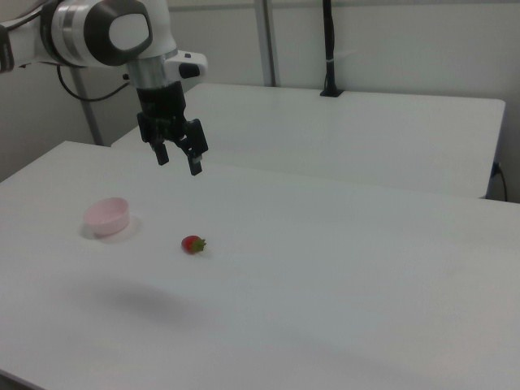

RoboMIND · franka_3rgb__pick_up_strawberry_in_bowl/1017_102820
Pick up strawberry in bowl

Annotation
From the dedicated visual review of this video (concise_action_v1). Plain text · JSON
Observed outcome
- Status
visually_completed
- Description
The strawberry starts on the table to the right of the empty pink bowl, is grasped (about frames 44-56), lifted and carried left over the bowl (about frames 78-96), and released; it is visible resting inside the bowl from about frame 108 onward. The gripper opens and the arm withdraws up and right, returning near its start pose with the strawberry remaining in the bowl through frame 132.
Hand roles
- Active visible arm
Single arm descends to the strawberry, closes its gripper on it, lifts and carries it to the bowl, opens the gripper to release it, and withdraws.
- Other arm
None.
Coordination
Single arm acts alone; no second arm, hand transfer or human interaction.
Robot-side evidence
- Visible description
Single Franka Emika Panda arm with a parallel-jaw gripper entering from the upper left edge of the camera_right view; only one arm exists.
- Source annotation
original/task_prompt.txt and HDF5 language_raw: 'pick up strawberry in bowl'.
- Visual certainty
Not a humanoid; left/right anatomy is not needed. The prompt refers to the single visible robotic arm.
Chronology
| Frames | Observation |
|---|---|
| 0–22 | Arm held above table at image left with gripper open and pointing down; empty pink bowl at left, red strawberry on the table to its right; scene static. |
| 24–42 | Arm moves down and toward the strawberry (the upper arm swings into view at image left), gripper open above the strawberry. |
| 44–56 | Gripper straddles the strawberry and closes on it (gripper telemetry rises from 0 at about frame 40 to about 0.53-0.58 by frames 52-56). |
| 58–76 | Gripper holds the strawberry at table height with a slight adjustment (gripper value dips to about 0.3 around frame 64 then returns to about 0.49); strawberry still near the table. |
| 78–96 | Arm lifts the strawberry and carries it left and down toward the pink bowl; strawberry is visibly held between the fingers (native frames around 78-96). |
| 96–106 | Gripper positioned over the bowl with the strawberry held just above/at the rim, then lowered into the bowl. |
| 104–116 | Gripper opens (value falls from about 0.54 at frame 100 to 0 by frame 116) and the strawberry is seen resting in the bowl. |
| 108–132 | Arm lifts away from the bowl and withdraws up and to image right, back to a raised pose similar to the start; strawberry remains inside the bowl through the final frame. |
Clip selection
The episode is one continuous single task (pick up the strawberry and place it in the bowl) with ordinary approach, grasp, lift, transfer, release and withdrawal phases, so the complete clip is retained and no shortened branch or separate full-sequence prompt is created.
Differences from the publisher annotation
- Publisher instruction 'pick up strawberry in bowl' is ambiguous (could read as picking the strawberry out of a bowl); the video shows the strawberry starting on the table and being placed into the bowl, so the prompt describes placing it into the bowl.
Uncertainties
- Exact grasp instant and the precise release frame are approximate; frame ranges are from every-second-frame sampling plus gripper telemetry.
- Gripper telemetry polarity (higher value = more closed) was inferred from the video and used only as supporting evidence.
- Strawberry stays inside the bowl at the end; it is seen resting in the bowl in the last frames, but its exact resting orientation is not resolvable at this resolution.
- FPS is not recorded in the source; frame indices are authoritative, not time.
Complete review record action_review.json
{
"prompt_protocol": "concise_action_v1",
"prompt_provenance": "visually_authored_from_video_and_initial_frame",
"dataset": "x-humanoid-robomind/RoboMIND",
"task": "pick_up_strawberry_in_bowl",
"episode_id": "1017_102820",
"source_video": "../../original/data/trajectory.hdf5",
"generation_camera": "camera_right",
"source_frame_count": 133,
"source_resolution": [
640,
480
],
"source_fps": null,
"source_fps_note": "FPS is not recorded in the source HDF5; 30 FPS is only a nominal playback rate, so no real-time durations are claimed.",
"selected_source_frame_start": 0,
"selected_source_frame_end_exclusive": 133,
"selected_frame_count": 133,
"selection_reason": "The episode is one continuous single task (pick up the strawberry and place it in the bowl) with ordinary approach, grasp, lift, transfer, release and withdrawal phases, so the complete clip is retained and no shortened branch or separate full-sequence prompt is created.",
"usable_prompt": "The robotic arm picks up the red strawberry from the table and places it into the pink bowl. Keep the camera fixed; preserve robot geometry, physically valid joint motion, and normal gripper opening and closing.",
"full_sequence_prompt": null,
"selected_action_outcome": {
"status": "visually_completed",
"description": "The strawberry starts on the table to the right of the empty pink bowl, is grasped (about frames 44-56), lifted and carried left over the bowl (about frames 78-96), and released; it is visible resting inside the bowl from about frame 108 onward. The gripper opens and the arm withdraws up and right, returning near its start pose with the strawberry remaining in the bowl through frame 132."
},
"source_overall_outcome": {
"status": "visually_completed",
"source_quality_label": null,
"description": "Same as the selected action: strawberry ends inside the pink bowl."
},
"anatomical_side_evidence": {
"visible_description": "Single Franka Emika Panda arm with a parallel-jaw gripper entering from the upper left edge of the camera_right view; only one arm exists.",
"source_annotation": "original/task_prompt.txt and HDF5 language_raw: 'pick up strawberry in bowl'.",
"visual_certainty": "Not a humanoid; left/right anatomy is not needed. The prompt refers to the single visible robotic arm."
},
"arm_roles": {
"active_visible_arm": "Single arm descends to the strawberry, closes its gripper on it, lifts and carries it to the bowl, opens the gripper to release it, and withdraws.",
"other_arm": "None."
},
"coordination": "Single arm acts alone; no second arm, hand transfer or human interaction.",
"chronology": [
{
"source_frames_inclusive": [
0,
22
],
"observation": "Arm held above table at image left with gripper open and pointing down; empty pink bowl at left, red strawberry on the table to its right; scene static."
},
{
"source_frames_inclusive": [
24,
42
],
"observation": "Arm moves down and toward the strawberry (the upper arm swings into view at image left), gripper open above the strawberry."
},
{
"source_frames_inclusive": [
44,
56
],
"observation": "Gripper straddles the strawberry and closes on it (gripper telemetry rises from 0 at about frame 40 to about 0.53-0.58 by frames 52-56)."
},
{
"source_frames_inclusive": [
58,
76
],
"observation": "Gripper holds the strawberry at table height with a slight adjustment (gripper value dips to about 0.3 around frame 64 then returns to about 0.49); strawberry still near the table."
},
{
"source_frames_inclusive": [
78,
96
],
"observation": "Arm lifts the strawberry and carries it left and down toward the pink bowl; strawberry is visibly held between the fingers (native frames around 78-96)."
},
{
"source_frames_inclusive": [
96,
106
],
"observation": "Gripper positioned over the bowl with the strawberry held just above/at the rim, then lowered into the bowl."
},
{
"source_frames_inclusive": [
104,
116
],
"observation": "Gripper opens (value falls from about 0.54 at frame 100 to 0 by frame 116) and the strawberry is seen resting in the bowl."
},
{
"source_frames_inclusive": [
108,
132
],
"observation": "Arm lifts away from the bowl and withdraws up and to image right, back to a raised pose similar to the start; strawberry remains inside the bowl through the final frame."
}
],
"uncertainties": [
"Exact grasp instant and the precise release frame are approximate; frame ranges are from every-second-frame sampling plus gripper telemetry.",
"Gripper telemetry polarity (higher value = more closed) was inferred from the video and used only as supporting evidence.",
"Strawberry stays inside the bowl at the end; it is seen resting in the bowl in the last frames, but its exact resting orientation is not resolvable at this resolution.",
"FPS is not recorded in the source; frame indices are authoritative, not time."
],
"source_annotation_discrepancies": [
"Publisher instruction 'pick up strawberry in bowl' is ambiguous (could read as picking the strawberry out of a bowl); the video shows the strawberry starting on the table and being placed into the bowl, so the prompt describes placing it into the bowl."
],
"inspection_coverage": {
"entire_sequence_reviewed": true,
"sampled_decoded_frame_indices": [
0,
2,
4,
6,
8,
10,
12,
14,
16,
18,
20,
22,
24,
26,
28,
30,
32,
34,
36,
38,
40,
42,
44,
46,
48,
50,
52,
54,
56,
58,
60,
62,
64,
66,
68,
70,
72,
74,
76,
78,
80,
82,
84,
86,
88,
90,
92,
94,
96,
98,
100,
102,
104,
106,
108,
110,
112,
114,
116,
118,
120,
122,
124,
126,
128,
130,
132
],
"sampling_method": "Every second decoded frame of camera_right (frames 0-132) in sequential temporary contact sheets covering the complete 133-frame source, plus native-resolution crops at the grasp, lift, release and withdrawal transitions.",
"native_resolution_frame_indices": [
0,
44,
52,
60,
70,
78,
84,
90,
96,
102,
106,
110,
114
],
"conditioning_png_inspected_after_sequence": true,
"conditioning_png": "../first_frame.png",
"temporary_evidence_location": "/tmp/rm_review_franka_3rgb__pick_up_strawberry_in_bowl_1017_102820 (not a dataset artifact)",
"ancillary_camera_videos_used": false,
"telemetry_used": "puppet/joint_position gripper column (index 7) sampled every 4 frames as supporting evidence only."
},
"generation_reference_validation": {
"source_frame_start": 0,
"source_frame_end_exclusive": 133,
"frame_count": 133,
"lossless_source_frame_correspondence_passed": true,
"original_source_hdf5_retained_unchanged": true
}
}